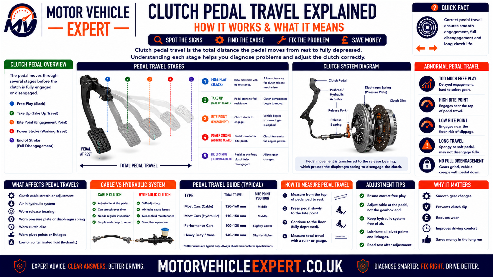
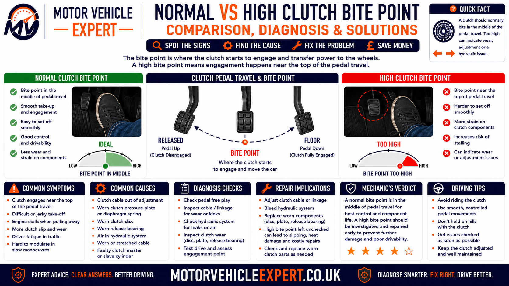
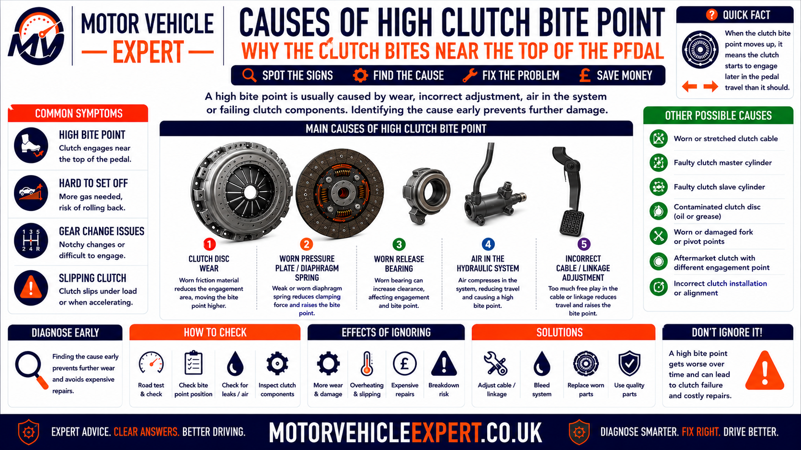
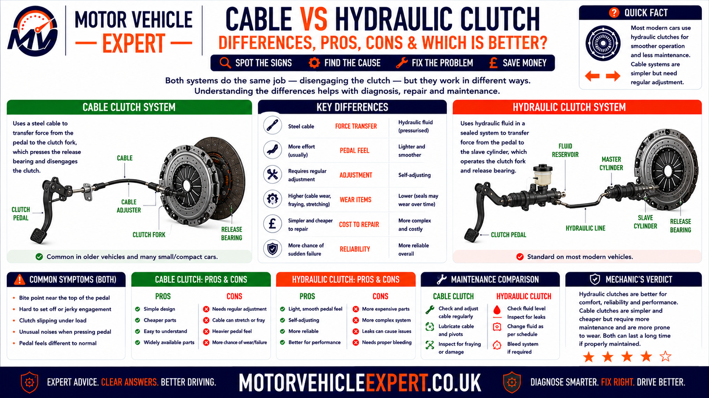
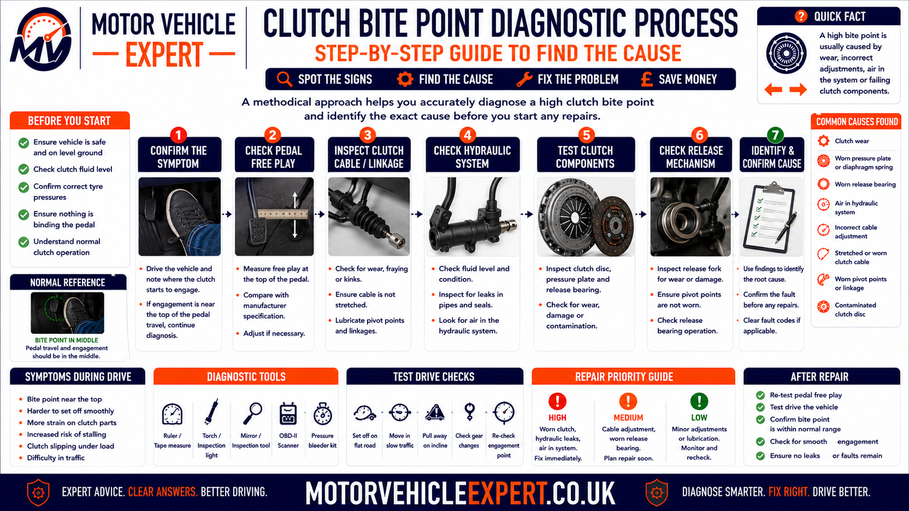
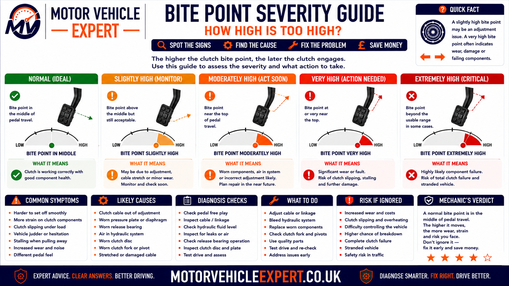
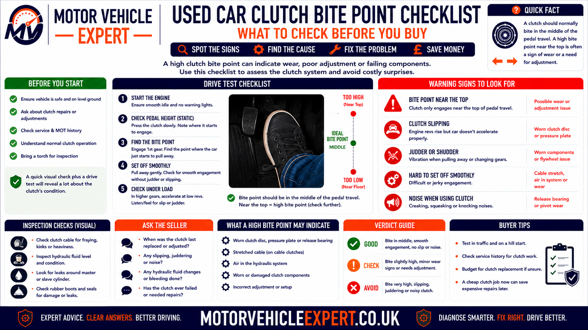
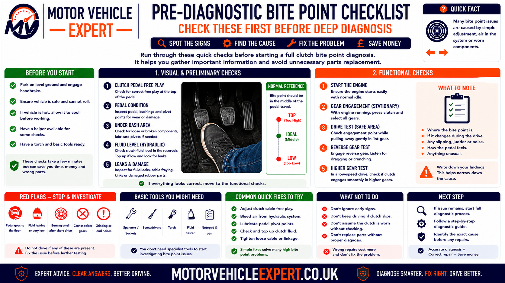

Use the Diagnostic App for a High Clutch Bite Point
A high bite point can come from normal pedal geometry, clutch wear, incorrect cable free play, hydraulic pressure, a sticking release mechanism or a recently fitted clutch. The Motor Vehicle Expert diagnostic app can help you compare the accompanying symptoms before clutch replacement is authorised.
1. Record the Engagement Position
Note whether the clutch begins taking up near the floor, in the middle or close to the top of pedal travel.
2. Check Whether It Changed
Establish whether the bite point has always been high, rose gradually or changed suddenly.
3. Compare Revs and Road Speed
Check whether engine speed rises without matching vehicle acceleration once the pedal is fully released.
4. Check Pedal Return and Consistency
Record sticking, slow return, changing bite position, noise or different behaviour when hot.
A clutch that has always engaged high may be normal for that vehicle. A bite point that has risen gradually, changed suddenly or moves as the clutch heats provides much stronger diagnostic evidence.
What Does a High Clutch Bite Point Mean?
A high clutch bite point means the clutch begins transferring engine torque close to the top of the pedal travel. This can be a normal characteristic on some vehicles, particularly where the engagement position has always been consistent and no other fault symptoms are present.
A high bite point becomes more suspicious when it has risen gradually, changed suddenly or appears with engine rev flare, poor acceleration, burning smell, hill-start difficulty, clutch judder or a pedal that does not return normally.
Always High and Consistent
May be a normal feature of the vehicle if the clutch transfers drive correctly and no other symptoms are present.
Rose Gradually Over Time
May support friction-plate wear, especially on a high-mileage clutch.
Changed Suddenly
Makes cable adjustment, hydraulic pressure, pedal or release- mechanism faults more likely.
High With Rev Flare
Strongly supports clutch slip and reduced torque-transfer capacity.
Typical Evidence
- ✓ The bite point has always been in the same position.
- ✓ Engine revs and road speed remain correctly linked.
- ✓ The pedal returns fully and consistently.
- ✓ No burning smell or smoke develops.
- ✓ Pull-away remains smooth.
- ✓ The clutch performs normally uphill and under load.
Typical Evidence
- ! The bite point has moved higher.
- ! Engine revs flare under acceleration.
- ! Road speed does not follow the rev increase.
- ! A burning clutch smell develops.
- ! The pedal sticks or returns slowly.
- ! The bite point changes when hot.
- ! Pull-away judder or hill-start difficulty is present.
Bite-point position is a symptom, not a complete diagnosis. Confirm whether the clutch transfers torque correctly, whether the pedal and release system return fully and whether the engagement position has changed from the vehicle’s normal behaviour.
Clutch replacement should be supported by slip, wear, contamination, pressure-plate damage or another confirmed internal fault. Cable, hydraulic and pedal-system checks should be completed first where applicable.
Is a High Clutch Bite Point Serious?
A high clutch bite point is not automatically a serious fault. Some vehicles naturally begin engaging near the upper part of the pedal travel, particularly where the engagement position has always remained stable and the clutch transfers engine torque correctly.
Concern increases when the bite point has moved higher, changes with temperature or appears alongside clutch slip, weak acceleration, a burning smell, pull-away judder, abnormal pedal return or difficulty moving the vehicle under load.
Always High and Stable
Lower ConcernThe clutch has always engaged in the same upper pedal position and no slip, smell, judder or pedal fault is present.
Gradually Moving Higher
Moderate ConcernProgressive engagement-position change may support friction wear, cable movement or self-adjusting mechanism operation.
High With Rev Flare
High ConcernEngine speed rises without matching road speed after the pedal has been released fully.
Smoke or Loss of Drive
UrgentSevere clutch overheating or failure may leave the vehicle unable to accelerate or move safely.
A High Bite Point May Be Acceptable When...
- ✓ It has always been in the same position.
- ✓ The pedal returns fully every time.
- ✓ The engagement position remains consistent hot and cold.
- ✓ Engine revs and road speed rise together.
- ✓ Pull-away remains smooth.
- ✓ No burning smell or smoke appears.
- ✓ The clutch performs normally uphill and under load.
Arrange Prompt Inspection When...
- ! The bite point has risen noticeably.
- ! Engine revs flare under acceleration.
- ! The pedal sticks or returns slowly.
- ! The bite point changes after repeated pedal use.
- ! A burning clutch smell develops.
- ! Pull-away judder or vibration is present.
- ! The vehicle struggles uphill or while carrying load.
A high clutch may continue working normally for a long period or begin slipping soon afterwards. Diagnosis must consider torque transfer, pedal operation, temperature, mileage, repair history and the complete release system.
What Is the Clutch Bite Point?
The clutch bite point is the pedal position where the clutch begins transferring engine torque into the gearbox. During this stage, the clutch friction plate starts gripping between the engine flywheel and pressure plate.
Below the bite point, the clutch is mainly disengaged and little engine torque reaches the gearbox. Through the engagement zone, controlled friction progressively connects the engine and transmission. Once the pedal is released fully, the clutch should clamp firmly without continuing to slip.
1. Pedal Fully Pressed
The release system lifts clamping force away from the friction plate so a gear can be selected.
2. Pedal Begins Rising
The pressure plate moves towards the clutch plate, but little torque may be transferred initially.
3. Bite Point Begins
The friction plate starts gripping and the vehicle responds to engine torque.
4. Engagement Zone
Controlled slip allows engine and gearbox input speeds to match smoothly.
5. Pedal Fully Released
The pressure plate should apply full clamping force to the friction plate.
6. Clutch Fully Locked
Engine torque should pass into the gearbox without continued friction or rev flare.
7. Pedal Return Maintained
Cable, hydraulic and pedal components must return fully to avoid release-system preload.
8. Next Disengagement
Pressing the pedal separates the torque path again for the next gear change.
Low Bite Point
Engagement begins close to the floor. This may be normal or may indicate incomplete release, air, leakage or limited pedal travel.
Mid-Travel Bite Point
Engagement begins around the central part of the pedal travel, which is common on many manual vehicles.
High Bite Point
Engagement begins close to the top of the travel and must be interpreted with the vehicle design and related symptoms.
Wide Engagement Zone
Torque takes up progressively through a relatively broad pedal range.
Narrow Engagement Zone
Drive changes quickly through a short section of pedal travel, which can make smooth pull-away harder.
Changing Engagement Zone
A bite point that moves hot to cold or after repeated use requires cable, hydraulic and release-system diagnosis.
The pedal operates a cable or hydraulic release mechanism before movement reaches the pressure plate. Wear, adjustment, leverage and component travel can change pedal position without directly measuring friction-plate thickness.
Clutch Pedal Travel Explained
Total pedal travel includes more than the clutch engagement zone. Initial free play, release-system movement, friction engagement and pedal over-travel all affect where the driver feels the clutch begin to bite.

The apparent bite-point position depends on pedal leverage, cable or hydraulic movement and the internal clutch assembly.
Pedal Rest Position
The pedal should return fully against its normal stop without sticking below the expected height.
Initial Free Play
A small specified movement may occur before the release system begins loading the clutch.
Release-System Movement
Pedal travel moves the cable, master cylinder, slave cylinder, release fork or concentric bearing.
Pressure-Plate Release
The release bearing acts on the diaphragm spring to reduce clamping force.
Clutch Bite Point
The clutch begins transferring torque as the pedal is released through the engagement position.
Engagement Zone
Controlled friction progressively connects the engine and gearbox.
Full Clamping
Once the pedal is released, the pressure plate should hold the clutch firmly against the flywheel.
Pedal Over-Travel
Some pedal movement may remain after the clutch has already disengaged fully.
Pedal Geometry
Pivot position and leverage can make two mechanically similar clutches feel different to the driver.
Carpet or Floor-Mat Interference
Incorrect mats or trim can limit pedal travel and create misleading engagement symptoms.
Pedal-Bracket Movement
Cracks, worn bushes or flexing can alter effective cable or hydraulic travel.
Temperature Effects
Hydraulic fluid, seals, hoses and clutch components can behave differently as temperature rises.
| Pedal observation | Possible meaning | Recommended check |
|---|---|---|
| Pedal returns fully and bite point is stable | Normal pedal operation possible | Compare with the vehicle’s usual behaviour |
| Pedal remains slightly depressed | Pedal, cable or hydraulic return fault | Inspect the release system before road testing |
| Bite point moves after repeated use | Heat-sensitive hydraulic or release fault | Test pedal travel cold and hot |
| Very little engagement movement | Narrow bite zone or incorrect adjustment | Measure free play and release travel |
| Pedal reaches the floor but clutch drags | Incomplete disengagement | Check hydraulics, cable travel and pressure plate |
| Pedal is fully released but clutch slips | Wear, contamination or release preload | Confirm torque transfer and full return |
Wear can affect engagement position, but cable adjustment, hydraulic operation, pedal geometry and self-adjusting mechanisms can produce similar changes.
Normal vs High Clutch Bite Point
There is no universal pedal measurement that separates every normal clutch from every high bite point. Vehicle design, pedal leverage and release-system type all affect the position. The comparison should focus on consistency and related symptoms.

A stable upper engagement position can be normal. A rising or changing bite point with clutch slip requires diagnosis.
Typical Evidence
- ✓ Engagement position has remained unchanged.
- ✓ The pedal returns completely.
- ✓ Pull-away is smooth and predictable.
- ✓ No rev flare occurs in higher gears.
- ✓ The vehicle accelerates normally uphill.
- ✓ No burning smell, smoke or judder develops.
- ✓ Hot and cold behaviour remains similar.
Typical Evidence
- ! The engagement position has risen.
- ! The clutch engages only at the final pedal movement.
- ! Engine revs flare under load.
- ! Road-speed response becomes delayed.
- ! The bite point changes when hot.
- ! Pedal return is slow or inconsistent.
- ! Burning smell, judder or uphill weakness is present.
| Comparison point | Normal high-position clutch | Fault-related high bite point |
|---|---|---|
| Change over time | Position remains stable | Position rises or changes suddenly |
| Pedal return | Complete and consistent | Slow, sticking or incomplete |
| Torque transfer | Revs and road speed remain linked | Revs flare without matching acceleration |
| Behaviour when hot | Little or no meaningful change | Bite point rises or slip appears |
| Pull-away | Smooth and predictable | Judder, excessive revs or delayed engagement |
| Uphill performance | Normal torque transfer | Weak acceleration or clutch slip |
| Smell | No abnormal friction smell | Burning clutch smell may develop |
| Repair direction | No repair from position alone | Diagnose clutch and release system |
The most valuable question is not simply whether the bite point feels high. Establish whether it has moved, whether it changes with temperature and whether torque transfer remains reliable.
When Can a High Clutch Bite Point Be Normal?
A clutch can engage relatively high without being worn out. Different manufacturers use different pedal ratios, master- cylinder sizes, slave-cylinder travel, cable geometry and pressure- plate designs.
Vehicle-Specific Pedal Geometry
Pedal leverage and pivot position affect where engagement is felt by the driver.
Hydraulic System Design
Master- and slave-cylinder dimensions determine movement and pedal travel.
Self-Adjusting Pressure Plate
Some clutch assemblies compensate for wear and maintain a characteristic engagement position.
Replacement Clutch Characteristics
A new clutch kit may engage differently from the removed components while still operating correctly.
Short Engagement Zone
Some vehicles naturally take up drive through a narrow upper section of pedal travel.
Consistent From New
A bite point that has always been high and has not changed is less suspicious than a recent movement.
No Clutch Slip
Correctly linked engine and road speed supports adequate friction capacity.
No Pedal-Return Fault
Full, prompt pedal return supports correct release-system operation.
No Heat or Smell
Absence of burning smell or smoke supports full clutch engagement.
There is no reliable rule stating that every clutch must bite at one exact fraction of pedal travel. Vehicle-specific behaviour and symptom history provide better evidence.
When Does a High Bite Point Indicate Clutch Wear?
Friction-plate wear becomes more likely when the bite point rises gradually over a long period and the clutch begins losing its ability to transfer torque under load.
Bite-point movement alone is not sufficient proof. The strongest evidence comes from rev flare, reduced uphill performance, burning smell and confirmed slip after the pedal is fully released.
Gradual Upward Movement
The engagement position has progressively approached the top of the pedal travel.
High Vehicle Mileage
Substantial use without documented clutch replacement supports ordinary friction wear.
Higher-Gear Rev Flare
Fourth-, fifth- or sixth-gear acceleration exposes reduced torque capacity.
Weak Uphill Acceleration
Gradient raises clutch load and can reveal wear before level- road driving does.
Burning Clutch Smell
Friction heat develops when worn surfaces slip under load.
Reduced Towing Ability
Additional vehicle mass can exceed the remaining clutch capacity.
Slip Becomes Worse When Hot
Heat can reduce already marginal friction performance.
No Pedal-Return Fault
Normal cable or hydraulic return makes internal friction wear more likely.
Progressive Rather Than Sudden Change
Ordinary clutch wear normally develops gradually rather than moving the bite point overnight.
Supporting Pattern
- ✓ Bite point rose gradually.
- ✓ Clutch mileage is high.
- ✓ Higher gears trigger rev flare.
- ✓ Hills or towing worsen the symptom.
- ✓ Pedal return remains normal.
- ✓ No recent repair changed the pedal system.
Supporting Pattern
- ! Bite point changed suddenly.
- ! Pedal return is slow or incomplete.
- ! Engagement position changes after repeated use.
- ! A cable or hydraulic repair was completed recently.
- ! The clutch has low mileage.
- ! Incorrect free play or residual pressure is measured.
Incorrect cable or pushrod adjustment can prevent full clutch engagement, create slip and damage the release bearing. Any adjustment must follow the correct vehicle specification.
Symptoms That Can Accompany a High Clutch Bite Point
A high engagement position becomes diagnostically useful when it appears alongside other clutch, pedal or drivetrain symptoms. Bite-point height alone cannot confirm whether the friction plate, pressure plate, cable, hydraulic system or pedal mechanism is at fault.
Engine Rev Flare
Engine speed rises suddenly without an equivalent increase in road speed after the clutch pedal has been released.
Weak Acceleration
The engine produces power, but some torque is lost before it reaches the gearbox and road wheels.
Burning Clutch Smell
Friction material can overheat when the clutch slips or remains partly released.
Pull-Away Judder
Contamination, glazing, flywheel damage or worn mountings can make engagement uneven.
Difficulty Moving Uphill
Increased drivetrain load can expose a clutch with reduced torque-transfer capacity.
Slip in Higher Gears
Fourth-, fifth- or sixth-gear acceleration may reveal clutch wear before the fault becomes obvious in lower gears.
Changing Bite Point
Engagement position moves after repeated pedal operation or as the vehicle becomes hot.
Slow Pedal Return
The clutch pedal hesitates, sticks or remains below its normal rest position.
Pedal Noise
Squeaking, clicking or grinding may come from pedal bushes, cable parts or the release mechanism.
Release-Bearing Noise
Whirring, grinding or rumbling that changes with pedal pressure can indicate release-bearing wear.
Difficulty Selecting Gears
Incomplete clutch disengagement may cause resistance, crunching or difficult first and reverse selection.
Intermittent Drive
Severe slip or a release-system fault may cause unpredictable torque transfer.
| High bite-point combination | More likely direction | Recommended check |
|---|---|---|
| High bite point with no other symptoms | Normal vehicle characteristic possible | Compare with previous behaviour and service history |
| High bite point with rev flare | Clutch slip or reduced clamping force | Confirm engine-speed and road-speed separation |
| High bite point with burning smell | Friction overheating | Stop repeated testing and inspect the clutch system |
| High bite point with slow pedal return | Cable, hydraulic or pedal fault | Measure release-system return before gearbox removal |
| High bite point with judder | Contamination, glazing, flywheel or mount fault | Inspect engagement and surrounding drivetrain parts |
| High bite point with difficult gear selection | Release travel may be incorrect | Check clutch disengagement and gearbox linkage |
| High bite point only when hot | Hydraulic pressure or heat-sensitive fault | Compare cold and hot pedal operation |
A high bite point with reliable torque transfer is very different from a high bite point accompanied by rev flare, smell, judder or abnormal pedal return.
Does a High Clutch Bite Point Mean the Clutch Is Slipping?
Not necessarily. The bite point describes where engagement begins, while clutch slip describes a failure to transfer full engine torque after the pedal has been released.
Genuine slip occurs when the engine flywheel rotates faster than the clutch plate and gearbox input shaft. Engine revs increase, but vehicle speed does not rise at the expected rate.
1. Pedal Is Released
The driver is no longer requesting clutch disengagement.
2. Pressure Plate Should Clamp
Full spring force should lock the friction plate against the flywheel.
3. Engine Torque Increases
Acceleration, hills or towing increase the load passing through the clutch.
4. Friction Capacity Is Exceeded
Wear, contamination or low clamping force allows relative movement.
5. Engine Revs Rise
The engine accelerates faster than the gearbox input shaft.
6. Road Speed Lags
Vehicle acceleration does not match the increase in engine speed.
7. Friction Heat Develops
Lost torque becomes heat at the clutch and flywheel surfaces.
8. Damage Progresses
Glazing and flywheel heat damage can make future slip easier to trigger.
Typical Pattern
- ✓ Engine revs and road speed rise together.
- ✓ Acceleration remains strong.
- ✓ Higher gears do not trigger rev flare.
- ✓ Hills do not expose lost drive.
- ✓ No burning smell appears.
- ✓ Engagement remains consistent.
Typical Pattern
- ! Engine revs jump under acceleration.
- ! Road speed increases slowly.
- ! Higher gears expose the fault first.
- ! Hills and towing worsen the symptom.
- ! Reducing throttle allows grip to return.
- ! A burning smell follows the slip.
One clear rev flare is sufficient evidence for diagnosis. Repeated higher-gear acceleration tests can overheat the clutch, pressure plate and flywheel.
Can a High Bite Point Cause a Burning Clutch Smell?
The pedal position itself does not create heat. A burning smell develops when friction surfaces continue slipping instead of locking together fully.
A high bite point and burning smell can share the same underlying cause, including worn friction material, weak pressure-plate clamping, incorrect cable adjustment, trapped hydraulic pressure or contamination inside the bellhousing.
Worn Friction Material
Reduced friction capacity can cause slip and heat under load.
Pressure-Plate Weakness
Reduced clamping force allows continued movement between the flywheel and clutch plate.
Release-System Preload
A cable or hydraulic fault can leave the clutch partly disengaged after the pedal is released.
Oil Contamination
Engine oil, gearbox oil or hydraulic fluid can reduce friction and produce slip, smell and judder.
Excessive Bite-Point Use
Holding the vehicle at the bite point creates heat even where the clutch is mechanically serviceable.
Incorrect Installation
Wrong parts, adjustment or assembly errors can make a recently fitted clutch overheat.
One difficult manoeuvre can temporarily overheat a clutch. Repeated smell with the pedal fully released suggests mechanical slip or incomplete clutch engagement.
Continuing to drive can damage the flywheel and leave the vehicle unable to move safely.
High Bite Point During Pull-Away and Hill Starts
Pull-away requires the driver to move through the clutch engagement zone smoothly. A very high or narrow bite point can make this control more difficult, particularly on gradients or when the vehicle carries additional load.
Late Drive Take-Up
The pedal may travel through most of its return before the car begins moving.
Narrow Engagement Zone
A small pedal movement causes a rapid change from no drive to substantial drive.
Excessive Engine Revs
Drivers may compensate for uncertain engagement by using more throttle than necessary.
Hill-Start Rollback
Late engagement can make timing the parking-brake release more difficult.
Pull-Away Judder
Uneven clutch friction, flywheel condition or mount movement can create vibration as drive takes up.
Stalling
A narrow or inconsistent bite point can make smooth torque application harder.
Burning Smell on Hills
Prolonged partial engagement creates substantial friction heat.
Weak Uphill Drive
A worn clutch may slip as gradient load increases.
Changing Engagement Point
An inconsistent pedal position can indicate hydraulic or cable operation rather than ordinary wear alone.
Reduce Clutch Heat
- ✓ Hold the vehicle with the parking brake.
- ✓ Identify the bite point briefly.
- ✓ Use appropriate rather than excessive engine speed.
- ✓ Release the parking brake as drive takes up.
- ✓ Complete clutch engagement promptly.
- ✓ Avoid holding the vehicle on clutch friction.
When Technique Is Not the Cause
- ! Ordinary hill starts produce rev flare.
- ! The vehicle struggles despite correct technique.
- ! A strong burning smell returns.
- ! Engagement position changes during the manoeuvre.
- ! The pedal does not return fully.
- ! Pull-away judder is severe or persistent.
Some drivers notice difficult pull-away before genuine clutch slip appears. Pedal consistency and road-load behaviour help separate control difficulty from friction failure.
Common Causes of a High Clutch Bite Point
A high bite point can result from normal design, friction wear, cable adjustment, hydraulic operation, pedal travel, release- mechanism movement or incorrect clutch installation.

The engagement position should be interpreted alongside pedal return, temperature, clutch slip, smell and repair history.
Normal Vehicle Design
Pedal geometry and release-system dimensions can produce an upper engagement position from new.
Worn Friction Plate
Progressive wear can change the internal clutch geometry and engagement position.
Weak Pressure Plate
Reduced or uneven clamping force can accompany high engagement and clutch slip.
Incorrect Cable Free Play
Excessive cable tension can keep the release mechanism partly applied.
Failed Automatic Cable Adjuster
A ratchet or quadrant fault can alter pedal position and cable tension.
Seized or Binding Cable
Internal corrosion can prevent the release fork returning completely.
Hydraulic Pressure Retention
A master cylinder, hose or compensation fault can leave release pressure applied.
Incorrect Master-Cylinder Pushrod
Insufficient free play can prevent the hydraulic system returning to its rest position.
Sticking Slave Cylinder
Mechanical binding can prevent complete pressure-plate engagement.
Self-Adjusting Clutch Fault
Incorrect resetting, wear compensation or installation can alter pressure-plate position.
Pedal-Bracket Wear
Worn bushes, cracks or flexing can change effective pedal movement.
Release-Fork or Pivot Wear
Wear and binding can alter release travel and pedal feel.
Incorrect Clutch Kit
Components that do not match the flywheel or release system can create abnormal engagement.
Incorrect Installation
Assembly, alignment, pressure-plate or release-system errors can affect bite-point position.
Flywheel Specification Change
Incorrect machining, conversion or flywheel dimensions can alter clutch geometry.
Floor-Mat Interference
Obstructed pedal movement can create misleading clutch travel observations.
Heat-Related Component Expansion
Hydraulic and mechanical parts may alter engagement as temperature rises.
Engine-Torque Modification
Remapping may expose clutch slip that was not apparent at the original engine output.
Gradual bite-point movement supports wear. A sudden change makes cable adjustment, hydraulic pressure, pedal damage or recent repair issues more likely.
Can a Worn Friction Plate Cause a High Bite Point?
Yes. As the friction lining wears, the pressure plate and release mechanism operate through a changing internal position. On some clutch designs, this can make the engagement point move higher.
Wear should not be diagnosed from pedal position alone. Confirm whether the clutch loses grip under load and whether the engagement position has changed gradually with mileage.
Progressive Engagement Change
The bite point moves higher over months or years rather than changing in one journey.
High-Mileage Clutch
Long service without replacement increases the likelihood of ordinary lining wear.
Slip Under Peak Torque
The clutch begins slipping when the engine produces strong torque in a higher gear.
Weak Hill Performance
Increased load exposes reduced friction capacity.
Burning Smell
Worn surfaces overheat when they continue moving against each other.
Temporary Grip After Cooling
Heat-sensitive slip may improve temporarily but return under load.
Reduced Towing Capacity
The clutch may cope unladen but slip with additional mass.
Normal Pedal Return
Full cable or hydraulic return makes internal wear more likely than release preload.
No Sudden Pedal Fault
Absence of a sudden mechanical change supports gradual wear.
Some pressure plates compensate for lining wear, so the bite point may remain relatively stable until clutch slip develops. Normal pedal position therefore does not prove that friction material is healthy.
Can a Pressure-Plate Fault Raise the Bite Point?
Yes. The pressure plate controls clamping force and forms part of the clutch-release geometry. Diaphragm-spring wear, distortion, incorrect installation or self-adjusting mechanism faults can alter engagement position.
Weak Diaphragm Spring
Reduced spring force can allow slip even where some friction lining remains.
Uneven Diaphragm Fingers
Release-bearing wear or installation errors can damage the spring-finger contact area.
Pressure-Plate Distortion
Uneven friction contact can produce slip, judder and an inconsistent engagement zone.
Heat Damage
Repeated clutch slip can crack, harden or distort the pressure- plate friction surface.
Self-Adjuster Incorrectly Set
Incorrect resetting can place the pressure plate outside its intended operating position.
Incorrect Clutch Cover
A pressure plate that does not match the flywheel and release system can alter pedal position and clamping.
Uneven Bolt Tightening
Incorrect fitting procedure can distort the cover assembly.
Release-Bearing Preload
Continuous bearing contact can act on the diaphragm spring and reduce clamping force.
Incorrect Flywheel Height
Machining or replacement geometry can change the pressure- plate working position.
| Pressure-plate clue | Possible effect | Required check |
|---|---|---|
| High bite point with adequate lining thickness | Pressure-plate or release geometry fault | Inspect clamping force and component compatibility |
| Uneven diaphragm-finger wear | Release-bearing alignment or preload fault | Inspect bearing, guide tube, fork and pivot |
| Heat discolouration and rev flare | Clutch has slipped under load | Replace damaged clutch parts and assess flywheel |
| High bite point after recent replacement | Installation or self-adjusting clutch issue | Review the parts and fitting procedure |
| High bite point with severe judder | Uneven pressure or flywheel surface | Measure flywheel and pressure-plate condition |
Weak pressure-plate clamping, contamination or release preload can reduce torque capacity even where the friction plate retains visible lining.
Cable vs Hydraulic Clutch Bite-Point Faults
Cable and hydraulic systems perform the same basic task but produce different fault patterns. Identifying the fitted system is essential before adjustment or component replacement is attempted.

Cable systems may have specified adjustment. Most hydraulic systems should not be adjusted merely to change the bite point.
Typical Components
- ✓ Clutch pedal and pedal quadrant.
- ✓ Inner cable and outer casing.
- ✓ Manual or automatic adjuster.
- ✓ Gearbox release arm or fork.
- ✓ Release bearing and pressure plate.
- ✓ Specified pedal or cable free play.
Typical Components
- ✓ Clutch pedal and master-cylinder pushrod.
- ✓ Master cylinder and fluid reservoir.
- ✓ Hydraulic pipe and flexible hose.
- ✓ External or concentric slave cylinder.
- ✓ Release fork or integrated bearing.
- ✓ Compensation and fluid-return passages.
| Comparison point | Cable clutch | Hydraulic clutch |
|---|---|---|
| Torque transfer control | Mechanical cable movement | Hydraulic fluid pressure and displacement |
| Normal adjustment | May have specified manual or automatic adjustment | Usually self-compensating with no normal bite adjustment |
| Common high bite-point cause | Incorrect free play or automatic-adjuster fault | Residual pressure or incorrect pushrod return |
| Common return problem | Seized cable or binding release arm | Master cylinder, hose or slave-cylinder fault |
| Leak evidence | No hydraulic fluid | Fluid loss may be present |
| Temperature-related change | Cable and mechanism may bind as parts heat | Fluid expansion or pressure retention may alter engagement |
| Internal release unit | Usually mechanical bearing and fork | May use a concentric slave cylinder |
| Before clutch replacement | Check cable condition, routing and free play | Check pressure return, cylinders, hose and leakage |
Attempting to move the bite point through an incorrect pushrod or pedal adjustment can block hydraulic compensation and hold the clutch partly released.
Clutch Cable and Adjustment Faults
A cable-operated clutch relies on the correct relationship between the pedal, cable, adjuster, release fork and pressure plate. Excessive cable tension can raise the bite point and may prevent the clutch from clamping fully after the pedal is released.
Too much free play can create the opposite problem by reducing release travel and making gear selection difficult. Adjustment must therefore follow the correct vehicle specification rather than being used simply to move the bite point.
Insufficient Cable Free Play
Continuous tension can keep the release bearing loaded and the pressure plate partly released.
Excessive Cable Free Play
Too much slack can reduce clutch disengagement and cause difficult first or reverse selection.
Incorrect Manual Adjustment
Over-adjustment can raise the bite point and create clutch slip, while under-adjustment can cause clutch drag.
Failed Automatic Adjuster
A worn ratchet, quadrant or self-adjusting cable can alter tension unexpectedly.
Stretched Inner Cable
Cable stretch changes available travel and may place the system outside its adjustment range.
Binding Cable
Internal corrosion or damaged strands can prevent smooth pedal and release-fork return.
Damaged Outer Casing
A collapsed or insecure casing changes effective cable movement under pedal load.
Incorrect Cable Routing
Tight bends, heat exposure or contact with other components can increase friction and restrict return.
Wrong Replacement Cable
Incorrect length, fittings or adjuster design can produce abnormal pedal travel and bite-point position.
Pedal Quadrant Wear
Worn teeth, bushes or mounting points can alter cable pull and engagement consistency.
Release-Fork Binding
A seized fork, pivot or guide can keep slight release pressure applied.
Bulkhead or Bracket Movement
Cracked mountings can flex as the pedal is operated and change effective cable travel.
Supporting Evidence
- ✓ Pedal movement feels rough or notchy.
- ✓ The pedal does not return consistently.
- ✓ Cable free play is outside specification.
- ✓ The bite point changed suddenly.
- ✓ Cable strands or casing damage is visible.
- ✓ The release arm fails to return fully.
Supporting Evidence
- ✓ Cable movement is smooth.
- ✓ Free play matches specification.
- ✓ Pedal and release arm return fully.
- ✓ The bite point rose gradually with mileage.
- ✓ Higher gears trigger clutch slip.
- ✓ A burning smell follows acceleration.
| Cable finding | Likely effect | Repair direction |
|---|---|---|
| Free play below specification | Release-system preload and possible clutch slip | Adjust correctly and verify full engagement |
| Free play above specification | Incomplete clutch disengagement | Correct adjustment and inspect cable stretch |
| Pedal movement is rough | Cable corrosion or broken strands | Replace the cable and inspect the pedal mechanism |
| Automatic adjuster skips or releases | Unstable bite-point position | Replace the failed adjuster or cable assembly |
| Release fork does not return | Binding fork, pivot or bearing | Inspect the complete release mechanism |
| Correct adjustment but clutch still slips | Internal wear, contamination or clamping fault | Continue clutch and flywheel diagnosis |
Reducing free play merely to change the pedal feel can hold the release bearing against the pressure plate, create slip and accelerate clutch failure.
Hydraulic Faults That Can Raise the Clutch Bite Point
A hydraulic clutch uses fluid displacement to operate the release mechanism. Most systems compensate automatically for ordinary wear, so a changing bite point should not be corrected through arbitrary pedal or pushrod adjustment.
A high or changing bite point can develop when pressure fails to return to the reservoir, a cylinder sticks, a hose becomes restricted or the pedal prevents the master cylinder reaching its rest position.
Master Cylinder Not Returning
Internal seal, piston or spring faults can retain hydraulic pressure after the pedal is released.
Blocked Compensation Port
Fluid cannot return freely to the reservoir, allowing pressure to build as temperature rises.
Incorrect Pushrod Free Play
A pushrod held too far forward may prevent the master cylinder uncovering its return port.
Restricted Flexible Hose
A damaged inner lining can allow pressure to apply but delay fluid return.
Sticking External Slave Cylinder
Corrosion or mechanical binding can keep the release fork partly operated.
Concentric Slave-Cylinder Fault
An internal release unit can stick, leak or contaminate the clutch inside the bellhousing.
Pedal Pivot Binding
A stiff pedal mechanism can prevent the master-cylinder pushrod returning fully.
Incorrect Hydraulic Fluid
Wrong or contaminated fluid can damage seals and affect cylinder operation.
Heat-Related Pressure Build-Up
Bite-point height and clutch slip may worsen after repeated pedal operation or traffic driving.
Shared Brake-Fluid Reservoir Fault
Low or contaminated fluid can affect clutch operation on vehicles sharing the brake reservoir.
Air in the Hydraulic System
Air more commonly creates a low or inconsistent bite point but may produce changing pedal behaviour.
Internal Seal Bypass
Fluid leaking past cylinder seals can alter pedal travel without an obvious external leak.
Typical Evidence
- ✓ Bite point rises as the vehicle heats.
- ✓ Pedal return becomes slower.
- ✓ Slip develops after repeated pedal use.
- ✓ Opening the hydraulic circuit releases pressure.
- ✓ The clutch has relatively low mileage.
- ✓ A recent cylinder or pedal repair preceded the fault.
Typical Evidence
- ✓ Pedal return remains complete.
- ✓ No retained hydraulic pressure is measured.
- ✓ Bite point rose gradually over a long period.
- ✓ Clutch mileage is substantial.
- ✓ Slip appears first in higher gears.
- ✓ Temperature changes the severity rather than pedal return.
| Hydraulic finding | Likely effect | Next action |
|---|---|---|
| Pedal does not return fully | Master cylinder, pushrod or pedal binding | Inspect the pedal and master-cylinder return |
| Bite point rises when hot | Pressure retention or hose restriction | Test residual pressure cold and hot |
| Fluid level falls | Master, pipe or slave-cylinder leak | Locate the leak before further driving |
| Bellhousing contains hydraulic fluid | Concentric slave-cylinder leak | Remove the gearbox and replace contaminated parts |
| Pedal sinks under steady pressure | Internal cylinder bypass | Test and replace the failed cylinder |
| Hydraulics operate correctly but clutch slips | Internal clutch or flywheel fault | Continue friction-system diagnosis |
Pedal position, pushrod free play, cylinder return and residual pressure can often be checked externally. This prevents a serviceable clutch being replaced while the hydraulic fault remains.
Self-Adjusting Clutch Faults and High Bite Points
Some pressure plates use a self-adjusting mechanism to compensate for friction-lining wear and maintain more consistent pedal effort and release geometry.
These assemblies require the correct transport locks, resetting tools and installation procedure. Incorrect handling can change the operating position, reduce clamping force or cause premature clutch slip.
Mechanism Not Reset
A previously operated self-adjusting pressure plate may be installed outside its intended starting position.
Incorrect Installation Tool
Fitting without the required compression tool can disturb the adjusting ring.
Transport Lock Removed Early
Releasing retaining features before installation can alter the pressure-plate setting.
Adjusting Ring Stuck
Corrosion, contamination or mechanical damage can prevent correct wear compensation.
Incorrect Pressure-Plate Position
The diaphragm spring may sit outside its intended operating angle.
Reduced Clamping Force
Incorrect adjustment can allow slip despite a new friction plate.
Abnormal Pedal Effort
Pedal weight may feel unusually light, heavy or inconsistent after installation.
Immediate High Bite Point
Engagement may occur unusually close to the top immediately after the repair.
Early Repeat Clutch Slip
Installation error can overheat and damage otherwise new clutch components.
Follow the clutch manufacturer’s procedure and use the specified tools. Incorrect resetting can damage the mechanism or create an unreliable repair.
Pedal and Release-Mechanism Faults
Movement begins at the pedal before reaching the clutch itself. Wear, cracking, binding or incorrect geometry anywhere in this chain can change the bite point without friction-plate wear being the primary cause.
Worn Pedal Bushes
Excess movement around the pivot can reduce or alter effective pedal travel.
Cracked Pedal Bracket
Flexing metal can change cable or master-cylinder movement under load.
Broken Pedal Spring
A failed assistance or return spring may prevent the pedal reaching its normal rest position.
Loose Master-Cylinder Mounting
Bulkhead or bracket movement can reduce effective hydraulic stroke.
Worn Release Fork
Contact-point wear changes release-bearing travel and clutch geometry.
Worn Fork Pivot
Excess movement or binding can affect pedal feel and return.
Release-Bearing Guide Wear
A damaged guide tube can make the bearing bind or move unevenly.
Incorrect Release Bearing
Wrong dimensions can alter resting clearance and pressure-plate movement.
Bellhousing Alignment Fault
Missing dowels or incorrect assembly can misalign the gearbox input shaft and release system.
Floor-Mat Obstruction
Loose or thick mats can restrict pedal movement or prevent full return.
Pedal Stop Misadjustment
An altered stop can limit release or hold the pedal away from its proper rest position.
Dashboard or Bulkhead Flex
Structural movement can absorb pedal travel before it reaches the clutch mechanism.
Where safely accessible, visible movement at the pedal bracket, cable mounting, master cylinder or external release arm can expose lost travel and incomplete return.
Why Is the Bite Point High After Clutch Replacement?
A replacement clutch may engage differently from the removed worn assembly. A stable high bite point is not automatically incorrect, provided the pedal returns fully, the clutch transfers torque without slip and gear selection remains normal.
A very high, changing or abnormal engagement point after repair requires the parts, flywheel, cable or hydraulic system and fitting procedure to be reviewed.
Normal New-Clutch Characteristic
The new assembly may have different spring and friction characteristics from the removed parts.
Incorrect Clutch Kit
Friction plate, pressure plate or release bearing dimensions may not match the vehicle.
Incorrect Plate Orientation
A friction plate fitted backwards can interfere with the flywheel or release mechanism.
Self-Adjusting Clutch Error
Incorrect resetting or installation can alter the pressure- plate working position.
Wrong Release Bearing
Incorrect bearing height can change pedal travel and resting clearance.
Incorrect Cable Adjustment
Too little free play can hold the new clutch partly released.
Hydraulic Pressure Retention
A master cylinder, hose or pushrod problem may become apparent after repair.
Flywheel Height Incorrect
Incorrect machining or the wrong flywheel can alter clutch geometry.
Release Fork Not Seated Correctly
Incorrect fork, pivot or bearing assembly can affect release movement.
Air or Bleeding Issue
Hydraulic bleeding problems normally create low or changing engagement but still require correction.
Pedal Stop or Pushrod Altered
Workshop adjustment may have changed the available pedal travel.
Installation Damage
Distortion, contamination or incorrect tightening can prevent normal clutch operation.
| Post-repair result | Possible interpretation | Recommended response |
|---|---|---|
| High but stable bite point with no slip | Normal replacement-clutch characteristic possible | Monitor and compare with repair specifications |
| High bite point with rev flare | Incorrect parts, adjustment or clamping fault | Stop load testing and return to the installer |
| Bite point rises as the car heats | Hydraulic pressure retention possible | Test the hydraulic return cold and hot |
| High bite point with difficult gear selection | Incorrect release travel or component geometry | Review bearing, fork, hydraulics and clutch kit |
| High bite point with judder | Flywheel, contamination or installation problem | Inspect the complete repair scope |
| Pedal does not return after repair | Pedal, cable or hydraulic fault | Do not continue driving until inspected |
Continued acceleration can damage new friction surfaces and the flywheel, making the original installation problem harder to prove.
Flywheel and Clutch-Kit Faults
The flywheel provides one of the clutch friction surfaces and establishes important dimensions for clutch and pressure-plate operation. Wear, incorrect machining or the wrong component can affect engagement position and clutch behaviour.
Flywheel Heat Spots
Localised hardened areas can create inconsistent friction and pull-away judder.
Flywheel Distortion
An uneven friction surface can prevent consistent pressure- plate contact.
Incorrect Machining Depth
Removing excessive material can alter clutch geometry and release position.
Incorrect Flywheel Step Height
Some flywheels require a precise relationship between mounting and friction surfaces.
Wrong Flywheel Specification
A flywheel from another engine or clutch arrangement may have incompatible dimensions.
Dual-Mass Flywheel Wear
Excess rotational or rocking movement can affect engagement, noise and clutch life.
Incorrect Friction Plate
Wrong thickness, diameter, hub offset or spline arrangement can prevent correct operation.
Incorrect Pressure Plate
Wrong cover height or diaphragm geometry can alter pedal feel and bite point.
Incorrect Release Bearing
Bearing height must match the clutch cover and release system.
Mixed Clutch Components
Combining unmatched parts can create incorrect geometry despite each component fitting individually.
Oil Contamination
Engine or gearbox oil can make the clutch slip and overheat regardless of bite-point position.
Incorrect Fastener Procedure
Uneven tightening or wrong bolts can distort the pressure plate or flywheel.
Friction plate, pressure plate, release bearing, flywheel and operating mechanism must have compatible dimensions and torque capacity.
High Clutch Bite-Point Diagnostic Process
Diagnosis should establish whether the engagement position is normal for the vehicle, whether it has changed and whether the clutch transfers torque correctly after the pedal has been released.

The process checks external pedal and release components before gearbox removal and confirms the internal cause where dismantling is justified.
1. Record the Symptom History
Establish whether the bite point has always been high, rose gradually or changed suddenly.
2. Identify the Clutch System
Confirm whether the vehicle uses a cable, hydraulic or electronically controlled release system.
3. Inspect Pedal Travel
Check free play, rest height, smoothness, noise and full pedal return.
4. Remove Pedal Obstructions
Check floor mats, trim and pedal stops before measuring travel.
5. Compare Cold and Hot Behaviour
Determine whether the bite point or pedal return changes with temperature.
6. Confirm Torque Transfer
Compare engine revs and road speed under a brief controlled load.
7. Check Cable Free Play
Inspect adjustment, cable movement, casing, routing and release-arm return where applicable.
8. Check Hydraulic Return
Inspect master cylinder, pushrod, hose, slave cylinder and retained pressure.
9. Inspect Pedal and Brackets
Look for worn bushes, cracks, flexing and incorrect stops.
10. Inspect for Fluid Leakage
Check master cylinder, pipework, slave cylinder and bellhousing.
11. Review Repair History
Confirm clutch, flywheel, cable, hydraulic and recent gearbox work.
12. Check Component Compatibility
Verify clutch-kit, release-bearing and flywheel part numbers after recent repairs.
13. Remove the Gearbox if Justified
Inspect friction wear, contamination, pressure plate, release mechanism and flywheel condition.
14. Correct the Root Cause
Repair adjustment, hydraulics, pedal damage, leakage, worn clutch components or incorrect installation.
15. Verify Pedal and Engagement
Confirm complete return, stable bite point and smooth pull-away.
16. Complete a Controlled Road Test
Verify reliable torque transfer without slip, smell or changing pedal behaviour.
| Diagnostic result | Likely direction | Next action |
|---|---|---|
| High but unchanged bite point with no symptoms | Normal vehicle characteristic possible | Record the baseline and monitor |
| Bite point rose gradually with clutch slip | Friction wear or reduced clamping force | Inspect clutch and flywheel condition |
| Bite point changed suddenly | Cable, hydraulic, pedal or recent repair fault | Check external operation before gearbox removal |
| Bite point rises when hot | Hydraulic pressure or release binding | Measure return and residual pressure cold and hot |
| Pedal does not return fully | Pedal, cable, cylinder or hose fault | Repair the return fault before load testing |
| High bite point after clutch replacement | Parts, adjustment, flywheel or fitting issue | Review the complete installation |
| High bite point with burning smell | Clutch slip or release preload | Stop repeated testing and inspect promptly |
| All external checks pass but slip remains | Internal clutch or flywheel fault | Authorise gearbox removal with evidence |
Deliberately trying to stall the engine against the brakes can overheat the clutch, damage drivetrain components and create an unsafe vehicle movement.
Pedal travel, cable free play, hydraulic return and road-speed evidence should establish why an internal clutch inspection is necessary.
Safe Checks for a High Clutch Bite Point
A few non-invasive checks can help establish whether the bite point is stable, whether the pedal returns fully and whether clutch slip or fluid leakage is present. These checks should not involve deliberately overheating the clutch or forcing the vehicle to stall.
1. Remove Pedal Obstructions
Check that floor mats, trim and loose objects do not restrict full clutch-pedal movement.
2. Check the Rest Position
Confirm that the clutch pedal returns to its normal height without sticking below the brake pedal or expected stop.
3. Operate the Pedal Slowly
Feel for roughness, clicking, sticking, changing resistance or delayed return.
4. Record the Bite Position
Note where drive begins relative to the total pedal movement without trying to create clutch slip.
5. Compare Cold and Hot Behaviour
Record whether the engagement point changes after normal driving or repeated pedal operation.
6. Check for Fluid Loss
Inspect the brake or clutch-fluid reservoir where accessible and look for external leakage.
7. Observe Normal Acceleration
During ordinary driving, note whether engine revs and road speed rise together.
8. Record Smell and Noise
Note burning smells, pedal squeaks, release-bearing noise or flywheel rattles without repeating the fault deliberately.
You Can Record...
- ✓ Whether the pedal returns fully.
- ✓ Whether the bite point is stable.
- ✓ Whether the symptom changes when hot.
- ✓ Whether engine revs flare during normal driving.
- ✓ Whether fluid level appears to fall.
- ✓ Whether a burning smell or unusual noise develops.
- ✓ Whether the clutch engages smoothly.
Never...
- ! Perform a handbrake-stall clutch test.
- ! Accelerate repeatedly in a high gear to provoke slip.
- ! Hold the vehicle on the clutch bite point.
- ! Adjust a cable or hydraulic pushrod without specifications.
- ! Work beneath an unsupported vehicle.
- ! Touch hot clutch, gearbox, exhaust or brake components.
- ! Continue driving after smoke or severe slip appears.
One unmistakable rev flare during normal acceleration is enough to arrange diagnosis. Repeating the symptom can glaze the clutch and damage the pressure plate and flywheel.
What a Mechanic Checks for a High Clutch Bite Point
Professional diagnosis should determine whether the engagement position is normal for the model, whether it has changed and whether the cable, hydraulic system or internal clutch assembly is responsible.
Symptom and Repair History
The technician records when the bite point changed and whether clutch, gearbox, cable or hydraulic work was completed recently.
Pedal Rest Height
Pedal position is compared with the brake pedal, mounting points and manufacturer information.
Total Pedal Travel
Free play, release movement, engagement zone and full pedal stroke are assessed.
Pedal Return
The pedal is checked for sticking, slow movement, weak springs and incomplete return.
Pedal Bracket and Bushes
Cracks, flexing, worn pivots and loose mountings are inspected.
Floor and Trim Clearance
Mats, carpet and pedal stops are checked for restricted movement.
Cable Free Play
Cable tension, adjuster condition, routing and return are compared with the correct specification.
Hydraulic Fluid Condition
Fluid level, contamination, leakage and reservoir operation are assessed.
Master-Cylinder Return
Pushrod free play, compensation and piston movement are checked.
Slave-Cylinder Movement
External or concentric slave operation is assessed for leakage, binding and incomplete return.
Flexible Hose Restriction
The technician checks whether pressure applies normally but returns too slowly.
Residual Hydraulic Pressure
Pressure is assessed cold and hot where the bite point changes with temperature.
Controlled Road Test
Engine speed and road-speed response are compared under a brief suitable load.
Bellhousing Leakage
Engine oil, gearbox oil and hydraulic-fluid contamination are investigated.
Clutch and Pressure Plate
If removal is justified, friction wear, glazing, clamping and installation are inspected.
Flywheel Condition
Surface damage, distortion and dual-mass movement are measured against specification.
Release Fork and Bearing
Bearing height, guide movement, fork wear and pivot condition are checked.
Component Compatibility
Part numbers are verified where the symptom followed a recent clutch replacement.
The Garage Should Establish...
- ✓ Whether the bite point has genuinely moved.
- ✓ Whether the pedal returns completely.
- ✓ Whether cable free play is correct.
- ✓ Whether hydraulic pressure is retained.
- ✓ Whether clutch slip is present.
- ✓ Whether fluid leakage is visible.
- ✓ Whether a recent repair changed the geometry.
The Components Should Explain...
- ✓ Whether friction material is worn.
- ✓ Whether pressure-plate clamping is weak.
- ✓ Whether the clutch is contaminated.
- ✓ Whether the release bearing remained loaded.
- ✓ Whether the flywheel is within specification.
- ✓ Whether the fitted parts are correct.
- ✓ Why the engagement position changed.
Pedal travel, cable free play, residual pressure, clutch wear and flywheel findings should support the repair recommendation rather than relying on bite-point height alone.
Fault Codes and Live Data for a High Clutch Bite Point
A conventional manual clutch can have a high bite point, worn friction material or mechanical slip without storing any fault code. Most vehicles do not measure the physical engagement position or remaining clutch-lining thickness directly.
Diagnostic data can still help separate clutch slip from engine power loss and can provide useful information on automated-manual and dual-clutch systems.
Engine Speed
Shows whether engine revs flare during the reported event.
Vehicle Speed
Allows road-speed response to be compared with engine speed.
Calculated Gear
Some control modules estimate the selected gear from speed relationships.
Engine Load
Shows the operating demand when clutch slip appeared.
Calculated Engine Torque
Helps identify whether slip begins near peak engine torque.
Clutch-Pedal Switch
Reports whether the pedal switch changes state, but does not measure the bite point.
Cruise-Control Cancellation
Incorrect clutch-switch operation may affect cruise control but does not prove friction wear.
Misfire Counters
Engine misfire can create poor acceleration without clutch slip.
Turbocharger Boost
Underboost can imitate weak acceleration while engine and road speed remain correctly linked.
Throttle Position
Confirms driver demand when comparing revs and vehicle response.
Transmission Input Speed
Automated and dual-clutch transmissions may report clutch input or shaft speed.
Transmission Output Speed
Input and output comparison can identify internal transmission slip.
Clutch Adaptation Values
Electronically controlled systems may record engagement and wear-compensation data.
Actuator Position
Automated-manual systems may report commanded and actual clutch actuator movement.
Clutch Temperature Estimate
Some dual-clutch systems estimate clutch temperature and store overheating faults.
| Electronic evidence | Possible interpretation | Next action |
|---|---|---|
| No fault codes but manual clutch rev flare is clear | Mechanical clutch slip remains likely | Inspect the clutch and release system physically |
| Engine misfire or underboost codes are stored | Engine performance may explain weak acceleration | Repair the engine fault before condemning the clutch |
| Clutch-pedal switch is implausible | Switch or pedal-position fault | Inspect adjustment and switch operation |
| DCT adaptation is at its limit | Clutch wear or actuator fault possible | Follow transmission-specific diagnostic procedures |
| Clutch actuator cannot reach its target | Mechanical binding or actuator failure | Inspect and calibrate the automated clutch system |
| Clutch overtemperature fault is stored | Excessive controlled or uncontrolled slip occurred | Inspect clutch wear, use and mechatronic operation |
| No relevant data or codes are available | Mechanical diagnosis remains essential | Continue pedal, cable, hydraulic and road-load checks |
Physical pedal travel, cable or hydraulic movement and clutch torque transfer must still be assessed directly.
Automated-clutch wear values, temperatures and freeze-frame data may contain important evidence about the original fault.
How Serious Is a High Clutch Bite Point?
Severity depends on whether the position is stable, whether it has changed and whether the clutch transfers torque correctly. A high bite point with no other symptoms carries a different risk from one accompanied by rev flare, burning smell or pedal-return failure.

Bite-point height becomes urgent when clutch slip, smoke, unreliable acceleration or incomplete pedal return is present.
Always High and Stable
Lower ConcernNo change, clutch slip, smell, judder or pedal fault is present.
Gradually Moving Higher
Moderate ConcernProgressive movement may indicate clutch wear or adjustment changes.
Changes When Hot
High ConcernHydraulic pressure retention or heat-sensitive binding may be preventing full engagement.
High With Rev Flare
High ConcernEngine speed and road speed separate under load.
High With Burning Smell
SeriousFriction heat may be damaging the clutch and flywheel.
Pedal Does Not Return
SeriousThe clutch may remain partly released and overheat rapidly.
Smoke or Severe Slip
UrgentSevere overheating or mechanical failure is possible.
Intermittent Loss of Drive
UrgentThe vehicle may no longer accelerate or move predictably.
Only When All Apply
- ✓ The bite point has always been high.
- ✓ The position remains consistent.
- ✓ Pedal return is complete.
- ✓ No clutch slip occurs.
- ✓ No burning smell or smoke appears.
- ✓ Hills and load do not expose weakness.
- ✓ Gear selection remains normal.
When Any Apply
- ! Smoke appears.
- ! Revs flare under gentle acceleration.
- ! The vehicle struggles to move.
- ! The pedal remains partly depressed.
- ! A strong burning smell returns.
- ! Fluid leakage is substantial.
- ! Drive becomes intermittent.
A worn clutch may deteriorate gradually or lose drive rapidly after severe overheating. Do not delay diagnosis once torque transfer becomes unreliable.
Can You Drive With a High Clutch Bite Point?
You may be able to continue driving carefully where the bite point is stable, the pedal returns fully and the clutch transfers drive without slip, smell or judder.
Arrange diagnosis when the engagement position has changed. Avoid further driving where acceleration is unreliable, clutch slip is present or the release system does not return completely.
Do Not Continue Driving If...
- ! Smoke appears from the clutch or gearbox area.
- ! Engine revs flare with light throttle.
- ! The car cannot accelerate safely.
- ! The pedal does not return fully.
- ! The vehicle struggles on an ordinary hill.
- ! A strong burning smell persists.
- ! Hydraulic fluid is leaking substantially.
- ! Drive becomes intermittent or disappears.
Consider Only If...
- ✓ The high bite point is stable.
- ✓ The pedal returns promptly.
- ✓ Engine revs and road speed remain linked.
- ✓ No smell, smoke or fluid leak is present.
- ✓ Pull-away remains smooth.
- ✓ The route avoids towing and severe gradients.
- ✓ A garage inspection is arranged.
Avoid Hard Acceleration
High torque can expose clutch slip and generate additional heat.
Avoid Towing
Trailer mass can exceed the remaining clutch capacity.
Avoid Holding on the Bite Point
Use the parking brake to control the vehicle on gradients.
Avoid Continuous Creeping
Repeated partial engagement increases friction heat.
Leave Extra Junction Space
Do not rely on rapid acceleration where the clutch may slip.
Stop at the First Deterioration
New smell, rev flare or pedal-return problems justify recovery.
The danger is not the pedal position itself. Risk develops when the clutch cannot transfer torque reliably during junctions, overtaking, hills or loaded driving.
Can a High Clutch Bite Point Fail an MOT?
A high clutch bite point is not itself a standalone MOT failure. The ordinary car MOT does not assess clutch wear, remaining friction-lining thickness or the exact engagement position.
Related defects may still affect the test independently. The vehicle must be capable of being operated and positioned safely, while significant leaks, warning lights and other testable faults remain relevant.
High Bite Point Alone
Not a Direct MOT ItemThe test does not include a specified clutch engagement-height measurement.
Clutch Wear or Slip
Not Normally Tested DirectlyA vehicle can hold a valid MOT while its clutch is worn or beginning to slip.
Severe Loss of Drive
Test May Be AffectedThe tester must be able to move and position the vehicle safely.
Hydraulic Fluid Leak
May Be RelevantLeakage may affect other testable systems or create a separate defect depending on its source and severity.
Applicable Warning Light
May Affect the ResultEngine or transmission warning lamps may have separate MOT relevance.
Valid MOT Certificate
Not a Clutch GuaranteeMOT status does not confirm clutch life, bite-point condition or flywheel health.
| Condition | MOT relevance | Recommended action |
|---|---|---|
| Stable high bite point with normal operation | Not normally a direct MOT failure | Monitor and inspect separately if concerned |
| Worn or slipping clutch | General clutch condition is not directly assessed | Repair because of reliability and safety risk |
| Vehicle cannot be moved reliably | Safe test operation may be impossible | Repair or recover before presenting the vehicle |
| Significant fluid leakage | May create a separate testable defect | Identify and repair the source |
| Engine or transmission warning light | May affect the result independently | Read and diagnose fault codes |
| Valid MOT but high bite point is present | MOT does not certify clutch health | Complete a separate clutch inspection |
Check pedal return, engagement consistency, torque transfer, burning smells, fluid leakage and clutch repair history separately.
Typical UK Repair Costs for a High Clutch Bite Point
Repair cost depends on whether the high bite point is a normal vehicle characteristic, an external cable or hydraulic fault, worn clutch friction material, pressure-plate damage, contamination, incorrect installation or a damaged flywheel.
A high bite point should not automatically lead to gearbox removal. Pedal travel, cable free play, hydraulic return and genuine clutch slip should be checked first. Where internal inspection is justified, the clutch, release system, oil seals and flywheel should be assessed during the same labour operation.
Clutch Bite-Point Diagnosis
£60–£180Usually includes symptom history, pedal checks, a controlled road test and initial cable or hydraulic inspection.
Engine and Transmission Scan
£50–£150+Helps separate clutch slip from engine power loss and assess electronically controlled clutch systems.
Clutch Cable Adjustment
£40–£100+Applies only where the cable system has a specified adjustment and the clutch itself remains serviceable.
Clutch Cable Replacement
£100–£300+Cost depends on cable routing, pedal access, adjuster design and release-arm condition.
Pedal Bush, Spring or Bracket Repair
£120–£600+Worn bushes, cracked brackets and failed return springs can alter effective clutch travel.
Clutch Hydraulic Bleeding
£60–£150+Suitable where air or degraded fluid affects pedal consistency, but bleeding cannot repair a sticking cylinder or restricted hose.
Clutch Master Cylinder
£180–£450+Includes cylinder replacement, bleeding and confirmation that the hydraulic pressure returns correctly.
External Slave Cylinder
£150–£400+An externally mounted slave cylinder can normally be replaced without removing the gearbox.
Clutch Hose or Pipe Repair
£120–£400+Restricted flexible hoses and corroded pipes can affect pressure application and return.
Concentric Slave Cylinder
£500–£1,200+Gearbox removal is normally required, so the clutch kit is commonly renewed during the same repair.
Release Fork, Pivot or Guide Repair
£300–£900+Cost depends on whether the component is externally accessible or located inside the bellhousing.
Clutch Kit Replacement
£600–£1,500+Usually includes the friction plate, pressure plate, release bearing and gearbox-removal labour.
Small Petrol-Car Clutch
£500–£1,000+Straightforward front-wheel-drive petrol vehicles may fall towards the lower end where access is reasonable.
Diesel or Large-Vehicle Clutch
£800–£1,700+Larger components, higher torque capacity and difficult transmission access can increase the bill.
Clutch and Dual-Mass Flywheel
£1,000–£2,500+Includes the clutch kit, dual-mass flywheel and shared gearbox-removal labour on many vehicles.
Solid Flywheel Replacement
£300–£900+Price depends on flywheel size, availability and whether the labour is shared with clutch replacement.
Solid Flywheel Machining
£80–£250+Appropriate only where machining is permitted and the correct surface finish and step height can be retained.
Rear Crankshaft Seal Repair
£500–£1,400+Gearbox and flywheel removal may be required. A contaminated clutch normally needs replacement.
Gearbox Input-Shaft Seal
£500–£1,400+Some transmissions require additional dismantling after gearbox removal to reach the seal.
Clutch and Oil-Seal Repair
£800–£2,000+Includes correcting the leak, replacing contaminated clutch parts and assessing the flywheel.
Incorrect Installation Diagnosis
£100–£300+Initial checks may include part-number verification, pedal travel, hydraulic return and repair-document review.
Installation Correction
£600–£1,800+Required where incorrect clutch parts, flywheel geometry or assembly faults demand renewed dismantling.
Clutch Actuator Diagnosis or Repair
£250–£1,200+Automated-manual systems may require actuator repair, calibration, clutch replacement or module diagnosis.
DCT or DSG Assessment
£100–£300+May include fault codes, clutch adaptations, temperatures, engagement data and mechatronic checks.
Dual-Clutch Pack Replacement
£1,200–£3,000+Wet and dry clutch systems require different components, fitting tools and adaptation procedures.
Mechatronic Unit Repair
£900–£2,500+Hydraulic and electronic faults can alter clutch engagement and create abnormal bite or slip behaviour.
Vehicle layout, labour rate, clutch design, flywheel condition, parts quality, corrosion and secondary damage can move a final quotation outside these ranges.
Do not approve a complete clutch replacement solely because the engagement position feels high. The written diagnosis should identify wear, slip, adjustment, pressure retention, contamination or installation error.
High Clutch Bite-Point Repair Cost Comparison
The least expensive repairs involve diagnosis, correct cable adjustment or an external hydraulic component. The most expensive involve gearbox removal, contamination, flywheel damage or electronically controlled clutch systems.
| Repair or assessment | Typical UK range | Usually required when | Important consideration |
|---|---|---|---|
| Bite-point diagnosis | £60–£180 | The cause has not been proven | External checks should precede gearbox removal |
| Cable adjustment | £40–£100+ | Specified free play is incorrect | Cannot restore worn friction material |
| Clutch cable | £100–£300+ | The cable sticks, stretches or fails to adjust | Inspect the quadrant and release arm as well |
| Pedal mechanism repair | £120–£600+ | Bushes, springs or brackets alter travel | Bulkhead and mounting damage can expand the scope |
| Hydraulic bleeding | £60–£150+ | Air or degraded fluid affects consistency | Will not repair retained pressure |
| Master cylinder | £180–£450+ | Pedal or pressure fails to return | Pushrod free play must be correct |
| External slave cylinder | £150–£400+ | The external cylinder leaks or sticks | Gearbox removal is normally unnecessary |
| Concentric slave cylinder | £500–£1,200+ | The internal release unit leaks or binds | Often renewed with the clutch kit |
| Standard clutch kit | £600–£1,500+ | Wear, glazing or pressure-plate damage is confirmed | Flywheel and seals must also be checked |
| Clutch and dual-mass flywheel | £1,000–£2,500+ | The flywheel is outside specification | Shared labour makes combined repair sensible |
| Clutch and oil-seal repair | £800–£2,000+ | Fluid has contaminated the clutch | The exact leak source must be corrected |
| Installation correction | £600–£1,800+ | A recent repair used wrong parts or geometry | Warranty responsibility should be established |
| DCT clutch pack | £1,200–£3,000+ | Electronically controlled clutch wear is confirmed | Adaptation and mechatronic condition matter |
| Mechatronic repair | £900–£2,500+ | Hydraulic or electronic clutch control fails | Correct coding and calibration are essential |
Confirm whether each price includes the clutch kit, release component, flywheel decision, seals, hydraulic parts, gearbox oil, fasteners, VAT and road-test verification.
What Affects High Bite-Point Repair Costs?
The final bill depends on the release-system design, drivetrain layout and whether continued clutch slip has damaged the flywheel or contaminated surrounding components.
Correct Diagnosis
Normal design, cable adjustment, hydraulics and internal wear require different repairs.
Cable or Hydraulic System
External cable faults are usually cheaper than internal concentric hydraulic repairs.
Gearbox Access
Subframes, driveshafts, exhaust parts and transfer boxes can increase labour time.
Clutch Type
Standard, self-adjusting, twin-plate and automated clutches require different parts and procedures.
Flywheel Design
Dual-mass flywheels are commonly more expensive than solid flywheels.
Oil Contamination
Seal repair expands the scope beyond ordinary clutch replacement.
Internal Slave Cylinder
Shared gearbox-removal labour often justifies preventative replacement.
Recent Installation Fault
Warranty, repeat dismantling and damaged new components affect the final cost.
Engine Modification
Increased torque may require a higher-capacity clutch.
Component Quality
Genuine, original-equipment and low-cost parts differ in specification and warranty.
Corroded Fasteners
Seized subframe, driveshaft and gearbox fixings increase labour.
Workshop Labour Rate
Dealer, independent and transmission-specialist rates vary across the UK.
Where the gearbox is already removed, renewing a worn release bearing, internal slave cylinder or leaking seal may prevent paying the same labour again.
Should You Adjust, Repair or Replace the Clutch?
The correct action depends on whether the high bite point is normal, created by an external operating fault or supported by evidence of internal clutch wear.
Stable Normal Characteristic
Appropriate where the bite point has always been high and no related fault symptoms are present.
Correct Cable Free Play
Suitable only on an adjustable cable system where the measured free play is outside specification.
Correct the Release System
Repair pedal, cable, master-cylinder, hose or slave-cylinder faults that prevent complete return.
Renew Internal Clutch Components
Replace the clutch where slip, wear, contamination or pressure- plate damage is confirmed.
| Condition | Minor action may be suitable when | Major repair is normally required when |
|---|---|---|
| Stable high bite point | No other symptoms are present | Slip, smell or pedal faults develop |
| Cable system | Free play is incorrectly adjusted | The clutch remains worn after adjustment |
| Hydraulic system | An external cylinder or hose fault is confirmed | Fluid contaminates the internal clutch |
| Friction plate | No adjustment restores worn lining | Slip or glazing is confirmed |
| Pressure plate | No external adjustment restores clamping force | Weakness, heat damage or distortion is present |
| Flywheel | It remains within specification | Cracks, distortion or excessive movement is present |
| New clutch | The bite point is stable with correct operation | Slip, judder or installation error is present |
Incorrect cable or pushrod adjustment can hold the clutch partly released and cause rapid overheating.
How to Reduce High Bite-Point Repair Costs
Early diagnosis offers the best chance of correcting an external pedal, cable or hydraulic fault before it overheats the clutch and damages the flywheel.
Record Whether It Changed
A clear history helps separate normal design from a developing fault.
Stop Repeated Slip Tests
One clear rev flare is enough to justify inspection.
Check External Parts First
Pedal, cable and hydraulic checks can prevent unnecessary gearbox removal.
Repair Leaks Together
Shared labour makes seal repair more economical during clutch replacement.
Assess the Flywheel Properly
Use measurements rather than replacing or reusing it by assumption.
Use a Complete Clutch Kit
Match the friction plate, pressure plate and release component.
Confirm Part Numbers
Incorrect components can create abnormal engagement after repair.
Declare Engine Modifications
Remapped engines may require greater clutch capacity.
Compare Itemised Quotes
Ensure garages have priced the same parts and labour scope.
A binding cable or retained hydraulic pressure can turn a small external repair into clutch and flywheel replacement if ignored.
Checking a Used Car With a High Clutch Bite Point
A high bite point on a used car may be normal, but it can also be an early warning of clutch wear, incorrect adjustment or a release system that is not returning fully.

A valid MOT does not confirm clutch condition or remaining service life.
Walk Away If...
- ! Engine revs flare under normal acceleration.
- ! A strong burning smell develops.
- ! The pedal sticks or returns slowly.
- ! The vehicle struggles uphill.
- ! Fluid leaks from the bellhousing.
- ! The bite point changes during the test.
- ! The seller refuses an independent inspection.
Consider Buying Only If...
- ✓ The exact cause has been diagnosed.
- ✓ An itemised repair quotation is available.
- ✓ Flywheel risk is included.
- ✓ Cable or hydraulic operation has been checked.
- ✓ The price reflects the repair.
- ✓ Post-repair verification is permitted.
Reassuring Signs
- ✓ Bite point is stable hot and cold.
- ✓ Pedal return is complete.
- ✓ Revs and road speed remain linked.
- ✓ Pull-away is smooth.
- ✓ No smell, smoke or leak is present.
- ✓ Repair history is documented.
Compare the pedal with model-specific behaviour, then confirm clutch torque transfer and complete release-system return.
Genuine Cold-Start Clutch Inspection
Inspecting the car cold helps identify pedal return, hydraulic leakage, flywheel noise and the initial engagement position before heat changes the symptoms.
1. Confirm the Car Is Cold
Check that the engine and exhaust were not warmed before your arrival.
2. Inspect Fluid Levels
Look for low brake or clutch fluid and visible leakage.
3. Check Pedal Rest Height
The clutch pedal should return fully without obstruction.
4. Operate the Pedal
Feel for sticking, clicking, roughness or delayed return.
5. Start and Listen
Note flywheel, release-bearing and gearbox-area noises.
6. Select First and Reverse
Gear selection should not require excessive force or grinding.
7. Assess Initial Pull-Away
Record bite-point position, smoothness and engine-speed use.
8. Repeat the Check Warm
Determine whether pedal return or engagement position changes.
Controlled Road Test for a High Clutch Bite Point
The purpose of the road test is to confirm whether the clutch transfers torque correctly, not to force it to slip.
1. Begin Gently
Check ordinary pull-away and gear changes first.
2. Observe the Bite Point
Record whether it remains consistent across several normal engagements.
3. Compare Revs and Speed
Engine and vehicle speed should remain linked after engagement.
4. Apply Moderate Load Briefly
Use a suitable higher gear only where safe and necessary.
5. Stop at the First Rev Flare
Lift the throttle immediately and do not repeat the test.
6. Include a Normal Gradient
Check whether the clutch transfers torque uphill without slip.
7. Reassess When Warm
Note any bite-point movement, smell or slow pedal return.
8. End the Test Safely
Stop if acceleration becomes unreliable or heat develops.
A brief moderate-load comparison is sufficient. Aggressive testing can damage the car and create an unsafe road situation.
Used-Car Clutch Pedal Check
Pedal condition can reveal cable, hydraulic and mounting faults before a road test begins.
Rest Height
Compare the clutch pedal with its normal stop and neighbouring pedal position.
Return Speed
The pedal should rise promptly without hesitation.
Sideways Movement
Excess play may indicate worn pedal bushes or bracket damage.
Roughness or Clicking
Cable strands, quadrants, pivots or springs may be worn.
Fluid Around the Pedal
Dampness near the pushrod can indicate master-cylinder leakage.
Floor-Mat Interference
Ensure the pedal can move and return without obstruction.
What Clutch Repair History Should Show
A useful invoice should explain what was replaced and why. A simple note stating “new clutch” does not confirm flywheel, release-system or installation quality.
Clutch-Kit Brand and Part Number
Confirms compatibility with the engine, gearbox and flywheel.
Release Component
Check whether the release bearing or concentric slave cylinder was replaced.
Flywheel Decision
Confirm whether it was measured, machined, replaced or reused.
Oil-Seal Repair
Contamination sources should be documented.
Cable or Hydraulic Work
Establish whether operating components were adjusted or renewed.
Warranty
Check parts and labour cover, mileage limits and transfer terms.
Pre-Diagnostic High Bite-Point Checklist
Record the symptom accurately before the garage visit. Avoid deliberately reproducing clutch slip once the fault is clear.

Clear symptom history helps distinguish normal pedal design from wear, adjustment and hydraulic faults.
Record the Bite Position
Note whether engagement begins low, mid-travel or near the top.
Record When It Changed
State whether the change was gradual or sudden.
Record Pedal Return
Note sticking, slow movement or incomplete return.
Compare Cold and Hot
Establish whether temperature changes the symptom.
Record Rev Flare
Note any separation between engine revs and road speed.
Record Smell or Smoke
State when and where heat symptoms appear.
Check Fluid Level
Record low fluid or visible hydraulic leakage.
Bring Repair Invoices
Include clutch, flywheel, cable, hydraulic and gearbox work.
Declare Modifications
Tell the garage about remapping and clutch conversions.
Smoke, severe slip, pedal-return failure or intermittent drive requires recovery rather than further testing.
Explore the Complete Clutch and Drivetrain Knowledge Centre
A high clutch bite point can overlap with clutch wear, clutch slip, burning smells, pedal and hydraulic faults, release-system noise, high-gear rev flare, pull-away judder and problems after clutch replacement. Use the related Motor Vehicle Expert guides below to compare the full symptom pattern before deciding that the clutch requires replacement.
Clutch Slip and Heat
Clutch Pedal and Repair
Pull-Away and Acceleration
Judder and Engine Symptoms
Used-Car Buying Guides
Diagnostics and MOT
A high bite point can support clutch wear, but pedal position varies between vehicles and should not be used as the only diagnosis. Confirm pedal return, cable or hydraulic operation, engine RPM versus road speed, burning smells, clutch noise and high-load behaviour before authorising clutch replacement.
High Clutch Bite Point FAQs
These 18 visible questions and answers match the FAQPage structured data in the page head word for word.
What does a high clutch bite point mean?
A high clutch bite point means the clutch begins transferring drive near the top of the pedal travel. This can be normal on some vehicles, but it may also indicate worn friction material, incorrect cable adjustment, hydraulic preload, a self-adjusting clutch fault or an installation problem.
Does a high clutch bite point always mean the clutch is worn?
No. A high bite point can indicate clutch wear, especially when it has risen gradually and is accompanied by rev flare, poor acceleration or a burning smell. However, pedal geometry, hydraulic systems, cable adjustment and self-adjusting clutch mechanisms can also affect the engagement position.
What is a normal clutch bite point?
A normal clutch bite point is usually somewhere through the middle section of the pedal travel, but the exact position varies between vehicles. The most important signs are consistent engagement, full pedal return and no clutch slip, judder, burning smell or difficulty selecting gears.
Can a high bite point cause clutch slip?
The bite-point position itself does not cause clutch slip. However, a high bite point may be a symptom of worn friction material or a release system that prevents full clamping. If engine revs rise without matching road speed, genuine clutch slip is likely.
Can a high clutch bite point be adjusted?
Some cable-operated clutches have an adjustment for pedal free play or cable length. Many modern hydraulic and self-adjusting clutches do not have a normal manual bite-point adjustment. Adjustment should follow the vehicle specification and must not be used to hide worn friction components.
Can a stretched clutch cable cause a high bite point?
A stretched, incorrectly adjusted, seized or failing clutch cable can alter pedal travel and bite-point position. The cable, pedal mechanism, automatic adjuster and release fork should be inspected before clutch wear is assumed.
Can a hydraulic clutch cause a high bite point?
Yes. A master cylinder, slave cylinder, restricted hose, incorrect pushrod adjustment or trapped hydraulic pressure can alter clutch release and engagement. A hydraulic fault is more likely when the bite point changes, the pedal returns slowly or symptoms worsen after repeated pedal use.
Why has my clutch bite point suddenly become high?
A sudden rise in the clutch bite point is less typical of gradual friction wear. Possible causes include cable-adjuster movement, hydraulic pressure not releasing, pedal or release-fork faults, incorrect installation, contamination or a self-adjusting clutch mechanism problem.
Why does the clutch bite point change when hot?
A bite point that changes as the vehicle heats up may indicate hydraulic pressure retention, fluid expansion, a restricted hose, binding release components, clutch overheating or contaminated friction surfaces. The pedal and release system should be tested cold and hot.
Can a new clutch have a high bite point?
Yes. Some replacement clutches naturally engage higher than the old worn assembly, but the pedal should remain consistent and the clutch should not slip, judder or smell. A very high or changing bite point after replacement may indicate incorrect parts, adjustment, installation or release-system problems.
Is a high clutch bite point dangerous?
A stable high bite point without slip or other symptoms may not be immediately dangerous. It becomes more serious when combined with rev flare, weak acceleration, burning smell, pedal-return problems, difficulty moving uphill or intermittent loss of drive.
Can I keep driving with a high clutch bite point?
You may be able to drive carefully if the bite point is stable and the clutch transfers drive normally. Arrange diagnosis if the position has changed, and stop driving if the clutch slips, smells, smokes, the pedal does not return or acceleration becomes unreliable.
How does a garage diagnose a high clutch bite point?
A garage normally compares the current bite point with the vehicle design, checks pedal free play and return, inspects the cable or hydraulic system, looks for fluid leakage, confirms whether the clutch slips under load and assesses the clutch, pressure plate, release system and flywheel if removal is required.
Can a high clutch bite point fail an MOT?
A high clutch bite point is not itself a standalone MOT failure because the ordinary car MOT does not assess clutch wear or bite-point position. Related fluid leaks, warning lights or defects that prevent the vehicle being operated safely may still affect the test.
Can a high bite point cause a burning clutch smell?
A high bite point does not create the smell by itself, but both symptoms can result from clutch wear or incomplete clutch engagement. If the clutch slips while the pedal is released, friction heat can produce a sharp burning smell and damage the flywheel.
Can a high bite point cause pull-away judder?
A high bite point can occur alongside pull-away judder, but the engagement position alone does not cause vibration. Judder may come from clutch contamination, glazed friction material, pressure-plate distortion, flywheel damage, worn mounts or incorrect installation.
Should I replace the clutch because the bite point is high?
Do not replace the clutch from bite-point position alone. Replacement is more likely to be justified when the high bite point is combined with clutch slip, burning smell, poor uphill acceleration, visible contamination or confirmed internal clutch wear.
How much does a high clutch bite-point repair cost in the UK?
Basic diagnosis commonly costs around £60 to £180. Cable or external hydraulic repairs may cost from about £100 to £500, while clutch-kit replacement commonly costs roughly £600 to £1,500. A clutch and dual-mass flywheel repair can exceed £1,000 to £2,500.
How the Clutch Bite Point Is Created
The bite point results from the combined movement of the pedal, cable or hydraulics, release bearing, pressure plate, friction plate and flywheel.
1. Pedal Begins to Rise
Driver input is reduced at the clutch pedal.
2. Release Pressure Reduces
Cable or hydraulic movement allows the pressure plate to return.
3. Friction Contact Begins
The clutch plate starts gripping the flywheel.
4. Vehicle Begins to Move
Engine torque starts passing into the gearbox.
5. Clamping Force Increases
Further pedal release increases pressure-plate force.
6. Engine and Gearbox Speeds Match
Controlled slip ends as the components synchronise.
7. Clutch Locks Fully
Full torque should transfer without rev flare.
8. Pedal Returns to Rest
The operating system must release all unnecessary pressure.
A fault at the pedal, cable, hydraulics, release system, pressure plate or flywheel can alter the engagement position.
High Clutch Bite Point: Key Takeaways
What You Should Do
- ✓ Establish whether the bite point changed.
- ✓ Check pedal return and free play.
- ✓ Identify cable or hydraulic operation.
- ✓ Compare cold and hot behaviour.
- ✓ Confirm engine revs and road speed remain linked.
- ✓ Inspect for leakage and recent repair errors.
- ✓ Assess the flywheel during clutch removal.
What You Should Never Ignore
- ! Engine rev flare.
- ! Burning clutch smell.
- ! Smoke from the clutch area.
- ! Slow or incomplete pedal return.
- ! Bite-point movement when hot.
- ! Weak uphill acceleration.
- ! Intermittent loss of drive.
Diagnosing a High Clutch Bite Point Correctly
A high clutch bite point can be a normal vehicle characteristic, particularly where the position has always been stable and the clutch transfers torque correctly.
A bite point that rises gradually may support clutch wear. A sudden or temperature-related change makes cable, hydraulic, pedal or release-system faults more likely.
Do not replace the clutch from engagement position alone. Confirm whether engine revs flare, the pedal returns fully, fluid leakage is present and the clutch performs correctly under ordinary load.
Stop driving where smoke, severe slip or unreliable acceleration develops. Early diagnosis can prevent a relatively small operating- system fault from damaging the clutch and flywheel.